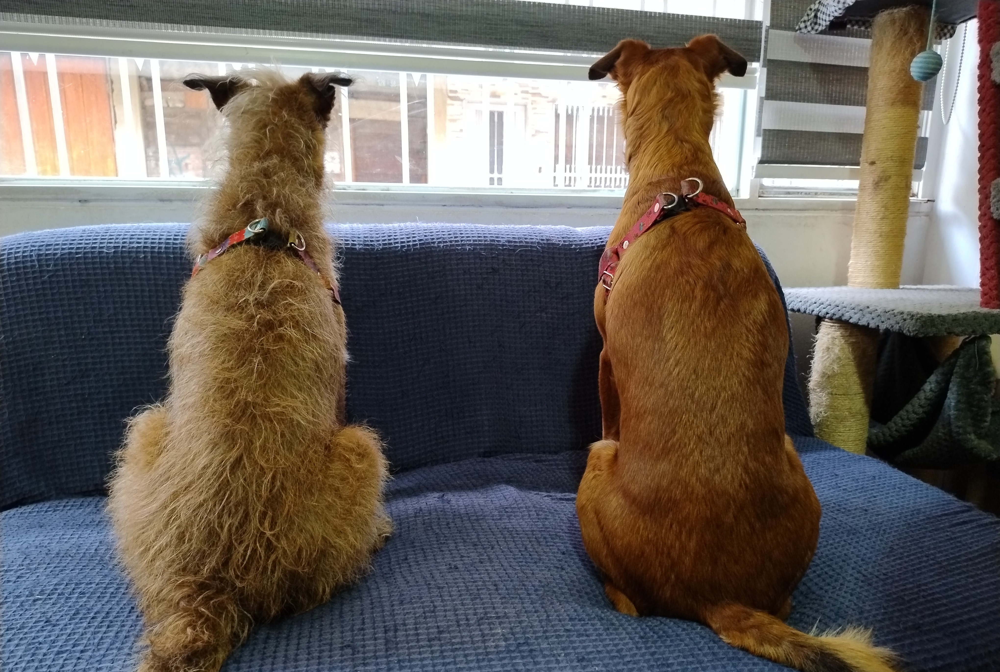

Las perritas palmireñas en Cali

13 de mayo del 2018 El dia en que las dos perritas llegaron a mi hogar, Luna, la perrita marrón la vi en una pagina y al contactar a las personas que la tenian me la llevaron a la casa, mientas que la otra perrita Mini, a quien tambien vi en una pagina la fui a recoger a Palmira, las personas que la tenian habian rescatado a su madre quien fue abandonada y ademas estaba preñada y a punto de dar a luz, mientras que a Luna siendo muy pequeña la abandonaron en la calle de donde afortunadamente fue rescatada.
Ambas perritas crecieron juntas conociendose desde que tenian apenas un mes o quizas un mes y medio de vida, la quimica fue inmediata y una vez se vieron empezaron a jugar como si se conocieran de toda la vida. y asi desde entonces han compartido su bella existencia juntas como si fueran hermanas quizas no de sangre sino de vida. y a pesar que a veces se disgustan y hasta incluso pelean el vinculo que tienen es muy grande, como grande ha sido mi alegria de verlas crecer juntas alegres y saludables.
¿Y como llegaron las perritas de Cali a Bogotá?
Puede llegar a ser una historia grata de contar. . .
Una madrugada en una moto cargada con maletas Luna Mini y yo vivimos a lo largo de dos dias una aventura en carretera con rumbo hacia nuestro nuevo destino. fué fue una aventura de ruta pura llena de desvios, carreteras cerradas, busqueda de hospedaje y paradas ocacionalmente para tomar un descanso y beber algo de agua.
Cada vez era mas dificil organizarnos para arrancar de nuevo pues cada vez las maletas me pesaban mas! y aparte de alforjas y equipaje yo llevaba a una Mini la mas juiciosa adelante sobre el tanque y Luna que es quizas mas nerviosa e inquieta iba en un morral a mi espalda, recuerdo en varias ocaciones -mientras yo conducia- a Mini mirarme fijamente, yo la acariciaba un poco sabiendo que el viaje era pesado para ellas pero era un esfuerzo que valia la pena hacer.
al segundo dia la recta final fue quizas la mas dificil, el recorrido cada vez se hacia mas largo y cada vez que intuia que ya estabamos a punto de llegar seguia otro tramo y otro mas...la noche estaba cayendo pero no habia otra opcion mas que continuar. de repente llegamos a vernos inmersos en el trafico tipico de una gran ciudad, fue un momento para hacer una ultima parada mas y estirar las piernas, tomamos un momento de descanso sabia que ya estabamos cerca pero aún quedaban unos kilometros de recorrido. La ciudad me parecia desconocida y me guiba mas por la intuicion hasta que llegamos al muy reconocible e inhospito centro de la ciudad, inmediatamente reconoci direccion correcta en la que cada vez faltaba un poco menos, kilometro tras kilomentro nos acercabamos a nuestro destino y ya mis energias se iban agotando.
Al final era una mezcla de alegria, cansancio, satisfaccion por el reto superado y emocion por la aventura vivida, de repente y tarde en la noche empezamos a recorrer las mismas calles que solia recorrer en mi adolescencia, empece a ver las casas de las personas a quienes yo habia crecido viendo y reconoci la casa en la que por años vivi, me detuve ahí, justo al frente, apagué la moto y liberé a mis compañeras, toqué la puerta y al rato una cara conocida me abrió la puerta por fin habia llegado y las perritas a pesar de no conocer el lugar sin vacilacion alguna decidieron entrar de inmediato.

A ellas les gusta estar en vigilancia permanente, y ya que hay un comodo sillón, vigilan mientras están comfortables y seguras. Permanecen muy alertas ya que no les agrada la precencia de otros perros cerca de la casa... y tampoco la precencia de algunas personas (sospechosas)